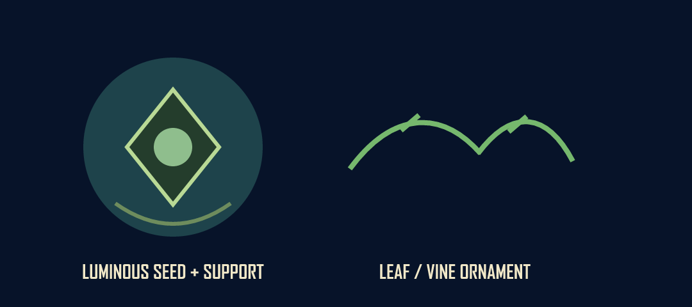
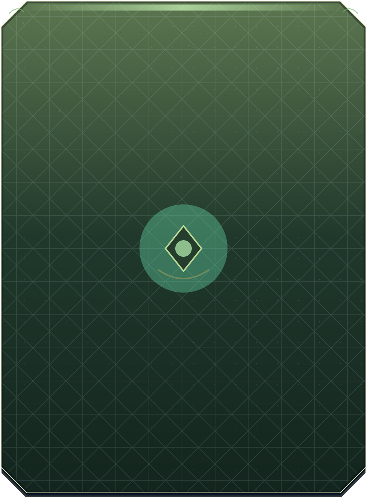

Material isolates

Stone, wood, moss, and local bioluminescence remain independently named source families.
Focal and ornament isolates

The luminous seed, support, and botanical ornament are separately addressable layers.
Shared-template panel

Inspect the matching SVG for stable shared geometry, named variation, ornament, focal, and content layers.